Kafka作为一个消息队列，具有很高的吞吐量，和Spark Streaming结合起来，可以实现高速实时的流处理。Spark Streaming在以前的版本支持两种方式读取Kafka，一种是通过 receiver 读取的方式，另一种是直接读取的方式。基于 receiver 方式的读取因为不太稳定，已经被最新版遗弃了，所以下面只讲直接读取的方式。

consumer 消费的 offset，这里会直接存储到 kafka里（__consumer_offset topic）。
driver 首先会从 kafka 获取消费组的 offset，然后生成 KafkaRDD，KafkaRDD里的每个分区对应了 kafka 中一个 topic partition 的一小段数据。
executor 会根据这个信息，从 kafka 中读取对应的数据，注意到这里consumer使用的是 assign 分配模式，它不会去管理 offset。executor 读取到数据后，会进行相应的处理。
driver 收到所有 executor 的处理成功消息后，会向 kafka 提交 offset。
下面可以看看它的示例代码
1
2
3
4
5
6
7
8
9
10
11
12
13
14
15
16
17
18
19
20
21
22
23
24
25
// kafka 配置项，这里只列出一些重要项
Map < String , Object > kafkaParams = new HashMap <>();
kafkaParams . put ( "bootstrap.servers" , "localhost:9092,anotherhost:9092" );
kafkaParams . put ( "group.id" , "my_consumer_group" );
kafkaParams . put ( "enable.auto.commit" , false );
Collection < String > topics = Arrays . asList ( "topicA" , "topicB" );
// 创建 kafka stream
JavaInputDStream < ConsumerRecord < String , String >> stream =
KafkaUtils . createDirectStream (
streamingContext ,
LocationStrategies . PreferConsistent (),
ConsumerStrategies .< String , String > Subscribe ( topics , kafkaParams )
);
// 调用 foreachRDD 来处理
stream . foreachRDD ( rdd -> {
OffsetRange [] offsetRanges = (( HasOffsetRanges ) rdd . rdd ()). offsetRanges (); // 在 driver执行
rdd . mapPartitions ( p -> {
// .... 处理
})
// 等待executor执行完任务，driver 端负责提交offset
(( CanCommitOffsets ) stream . inputDStream ()). commitAsync ( offsetRanges );
});
Kafka数据输入流由DirectKafkaInputDStream类表示，它会定期生成RDD。DirectKafkaInputDStream每次生成RDD的数据，都是读取kafka对应的topic所有分区，自从上次提交的offset一直到最新的offset到的数据。
DirectKafkaInputDStream继承InputDStream，它的compute方法负责生成RDD
1
2
3
4
5
6
7
8
9
10
11
12
13
14
15
16
17
18
19
20
21
22
23
24
25
26
27
28
29
30
31
32
33
34
35
36
class DirectKafkaInputDStream [ K , V ](
_ssc : StreamingContext ,
locationStrategy : LocationStrategy ,
consumerStrategy : ConsumerStrategy [ K , V ],
ppc : PerPartitionConfig
) extends InputDStream [ ConsumerRecord [ K , V ]]( _ssc ) with Logging with CanCommitOffsets {
// 记录上次提交的offset， key为Kafka的topic分区，value为提交的offset
protected var currentOffsets = Map [ TopicPartition , Long ]()
override def compute ( validTime : Time ) : Option [ KafkaRDD [ K , V ]] = {
// 这里调用了latestOffsets方法，实时获取topic partition的最新offset
// clamp方法增加了限速的功能，计算出限速条件下，允许获取最大数据的offset
val untilOffsets = clamp ( latestOffsets ())
// 为每一个topic partition生成一个OffsetRange
val offsetRanges = untilOffsets . map { case ( tp , uo ) =>
// 获取上次提交的offset
val fo = currentOffsets ( tp )
// 这批数据在kafka中的offset范围，是上次提交的offset到现在kafka中最新的offset
OffsetRange ( tp . topic , tp . partition , fo , uo )
}
val useConsumerCache = context . conf . getBoolean ( "spark.streaming.kafka.consumer.cache.enabled" ,
true )
// 生成KafkaRDD
val rdd = new KafkaRDD [ K , V ]( context . sparkContext , executorKafkaParams , offsetRanges . toArray ,
getPreferredHosts , useConsumerCache )
// 更新currentOffsets
currentOffsets = untilOffsets
// 这里commitAll会去提交offset，但是DirectKafkaInputDStream是不管理offset，
// 只有用户主动调用了它的commitAsync方法，才会提交
commitAll ()
// 返回 rdd
Some ( rdd )
}
}
DirectKafkaInputDStream定期生成的RDD的类型是KafkaRDD。我们首先看看 KafkaRDD是如何划分分区的，它会根据从初始化时接收的offset信息参数，生成KafkaRDDPartition分区，每个分区对应着Kafka的一个topic partition 的一段数据。这段数据的信息由OffsetRange表示， 它保存了数据的位置。
1
2
3
4
5
final class OffsetRange private (
val topic : String , // Kafka的topic名称
val partition : Int , // 该topic的partition
val fromOffset : Long , // 起始offset
val untilOffset : Long ); // 截至offset
KafkaRDD继承RDD，它的getPartitions负责生成分区
1
2
3
4
5
6
7
8
9
10
private [ spark ] class KafkaRDD [ K , V ](
val offsetRanges : Array [ OffsetRange ]
) extends RDD [ ConsumerRecord [ K , V ]]( sc , Nil ) with Logging with HasOffsetRanges {
override def getPartitions : Array [ Partition ] = {
offsetRanges . zipWithIndex . map { case ( o , i ) =>
new KafkaRDDPartition ( i , o . topic , o . partition , o . fromOffset , o . untilOffset )
}. toArray
}
}
接下来看看KafkaRDD的分区数据是如何读取的。它使用KafkaRDDIterator遍历数据，而KafkaRDDIterator的原理，是调用CachedKafkaConsumer的get方法获取数据
1
2
3
4
5
6
7
8
9
10
11
12
13
14
15
16
17
18
19
20
21
22
23
24
25
26
27
28
29
30
31
32
33
34
35
36
37
38
39
40
41
42
43
44
45
46
47
48
49
50
51
52
53
54
55
56
57
58
class KafkaRDD [ K , V ] {
override def compute ( thePart : Partition , context : TaskContext ) : Iterator [ ConsumerRecord [ K , V ]] = {
// 向下转型为KafkaRDDPartition
val part = thePart . asInstanceOf [ KafkaRDDPartition ]
if ( part . fromOffset == part . untilOffset ) {
Iterator . empty
} else {
// 返回迭代器
new KafkaRDDIterator ( part , context )
}
}
class KafkaRDDIterator (
part : KafkaRDDPartition ,
context : TaskContext ) extends Iterator [ ConsumerRecord [ K , V ]] {
logInfo ( s"Computing topic ${ part . topic } , partition ${ part . partition } " +
s"offsets ${ part . fromOffset } -> ${ part . untilOffset } " )
// 获取kafka消费者的groupId
val groupId = kafkaParams . get ( ConsumerConfig . GROUP_ID_CONFIG ). asInstanceOf [ String ]
// 当整个spark streaming任务退出时，会调用closeIfNeeded方法关闭 kafka消费者
context . addTaskCompletionListener { context => closeIfNeeded () }
// 获取 kafka消费者
val consumer = if ( useConsumerCache ) {
// 如果支持 kafka消费者缓存，那么实例化CachedKafkaConsumer
CachedKafkaConsumer . init ( cacheInitialCapacity , cacheMaxCapacity , cacheLoadFactor )
if ( context . attemptNumber >= 1 ) {
// 如果此次任务失败过，那么删除以前的 kafka 消费者
CachedKafkaConsumer . remove ( groupId , part . topic , part . partition )
}
// 返回对应groupId，topic和partition的kafka消费者，如果有缓存则返回缓存的。
CachedKafkaConsumer . get [ K , V ]( groupId , part . topic , part . partition , kafkaParams )
} else {
// 新建对应groupId，topic和partition的kafka消费者
CachedKafkaConsumer . getUncached [ K , V ]( groupId , part . topic , part . partition , kafkaParams )
}
// 关闭kafka消费者
def closeIfNeeded () : Unit = {
if (! useConsumerCache && consumer != null ) {
consumer . close
}
}
// 只返回offset大于fromOffset，小于untilOffset的数据
var requestOffset = part . fromOffset
override def hasNext () : Boolean = requestOffset < part . untilOffset
override def next () : ConsumerRecord [ K , V ] = {
assert ( hasNext (), "Can't call getNext() once untilOffset has been reached" )
// 调用CachedKafkaConsumer的get方法返回一条数据
val r = consumer . get ( requestOffset , pollTimeout )
requestOffset += 1
r
}
}
}
CachedKafkaConsumer包含了KafkaConsumer实例，它是Kafka的消费者。CachedKafkaConsumer使用KafkaConsumer的assign模式，这种模式需要客户端自己管理offset。CachedKafkaConsumer是运行在 executor 节点上的，它只负责从kafka中读取指定的一段数据，所以不需要管理offset。
1
2
3
4
5
6
7
8
9
10
11
12
13
14
15
16
17
18
19
20
21
22
23
24
25
26
27
28
29
30
31
32
33
34
35
36
37
38
39
40
41
42
43
44
45
46
47
48
49
50
51
52
53
54
55
56
57
58
59
60
61
62
63
64
65
66
67
68
69
70
71
72
73
74
75
class CachedKafkaConsumer [ K , V ] private (
val groupId : String ,
val topic : String ,
val partition : Int ,
val kafkaParams : ju.Map [ String , Object ]) extends Logging {
val topicPartition = new TopicPartition ( topic , partition )
// 实例化 KafkaConsumer，使用assign模式。这种模式需要自己维护offset
protected val consumer = {
val c = new KafkaConsumer [ K , V ]( kafkaParams )
val tps = new ju . ArrayList [ TopicPartition ]()
tps . add ( topicPartition )
c . assign ( tps )
c
}
// 从kafka一次读取的数据是多条的，这里用buffer缓存读取的数据
protected var buffer = ju . Collections . emptyList [ ConsumerRecord [ K , V ]](). iterator
// 下一条数据的offset
protected var nextOffset = - 2L
def close () : Unit = consumer . close ()
// 获取offset对应的数据
def get ( offset : Long , timeout : Long ) : ConsumerRecord [ K , V ] = {
logDebug ( s"Get $groupId $topic $partition nextOffset $nextOffset requested $offset " )
// 如果要获取数据的offset不等于下一条数据的offset，则调用seek移动KafKaConsumer的位置
if ( offset != nextOffset ) {
logInfo ( s"Initial fetch for $groupId $topic $partition $offset " )
// 移动读取位置
seek ( offset )
// 从kafka获取数据
poll ( timeout )
}
// 如果缓存的数据，已经读完，则调用poll从kafka中读取数据
if (! buffer . hasNext ()) { poll ( timeout ) }
assert ( buffer . hasNext (),
s"Failed to get records for $groupId $topic $partition $offset after polling for $timeout " )
// 获取buffer的数据
var record = buffer . next ()
if ( record . offset != offset ) {
// 如果从buffer中获取的数据有问题，则需要重新从Kafka中读取数据
logInfo ( s"Buffer miss for $groupId $topic $partition $offset " )
seek ( offset )
poll ( timeout )
assert ( buffer . hasNext (),
s"Failed to get records for $groupId $topic $partition $offset after polling for $timeout " )
// 从buffer中读取数据
record = buffer . next ()
// 检测该数据的offset是否等于预期
assert ( record . offset == offset ,
s"Got wrong record for $groupId $topic $partition even after seeking to offset $offset " )
}
// 更新nextOffset为当前offset+1
nextOffset = offset + 1
record
}
private def seek ( offset : Long ) : Unit = {
// 调用KafKaConsumer的seek方法移动读取位置
logDebug ( s"Seeking to $topicPartition $offset " )
consumer . seek ( topicPartition , offset )
}
private def poll ( timeout : Long ) : Unit = {
// 调用poll方法读取数据
val p = consumer . poll ( timeout )
// 获取该topic partition的数据
val r = p . records ( topicPartition )
logDebug ( s"Polled ${ p . partitions () } ${ r . size } " )
buffer = r . iterator
}
}
从上面的代码可以看到，CachedKafkaConsumer会按照offset顺序的读取数据，并且offset还必须是连续的。如果Kafka开启了日志压缩功能，就会将相同key的数据压缩成一条，那么这样消息的offset就不会是连续的。这种情况下，spark streaming就会报错。上面的代码是spark 2.2版本的，后面的版本修复了这个问题，参见 pull request ，增加了spark.streaming.kafka.allowNonConsecutiveOffsets配置，允许处理这种情况。